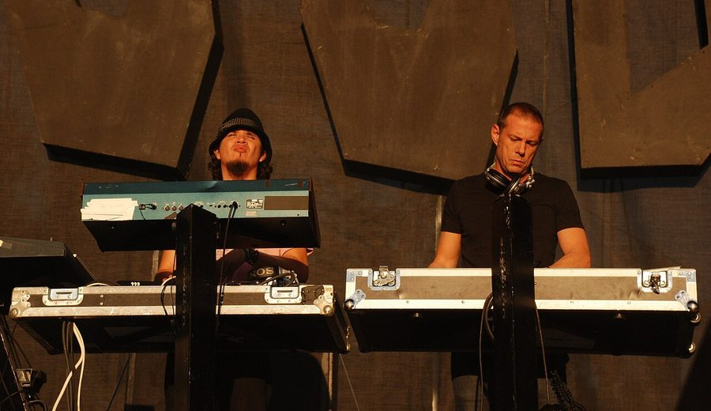

Thievery Corporation [Audio]: Retaliating through the radio waves



STREAMING AUDIO INTERVIEW
There’s a strong sense of tension that runs throughout the new Thievery Corporation album. The Washington-based duo have returned with their first LP of new material in several years with Radio Retaliation, and on a musical level it’s shown them to be more accomplished than ever in the studio, as well as better than ever at taking musical inspiration from every corner of the globe the world and giving it that unmistakable ‘Thievery Corporation’ spin. But what really stands out about Radio Retaliation is the politics: while they’ve always been an act that’s defined themselves as ‘politically aware’, it’s stronger than ever on their new album. Looking towards their choice of MCs alone, the anger is positively seething.
“With Radio Retaliation it’s definitely a more overt political statement,” Thievery Corporation announced to the world when the new record hit the shelves. “There’s no excuse for not speaking out at this point, with the suspension of habeas corpus, outsourced torture, illegal wars of aggression, fuel, food, and economic crises. It’s hard to close your eyes and sleep while the world is burning around you. If you are an artist, this is the most essential time to speak up.”
Radio Retaliation makes for a predictably superb listen, and musically it’s arguably their finest work to date. However, it’s the album’s acute political awareness that gives it a special edge. Beginning with their choice of depicting a Mexican Zapatista fighter on the cover art, it carries through to the new talent they’ve recruited to address the album’s fiery themes that includes Nigeria’s Femi Kuti, Brazil’s Seu Jorge and Washington’s own Chuck Brown. ITM’s Angus Paterson speaks to Thievery Corporation about rallying up some radio retaliation.
Thievery Corporation’s Radio Retaliation is out now in Australia through Shock.